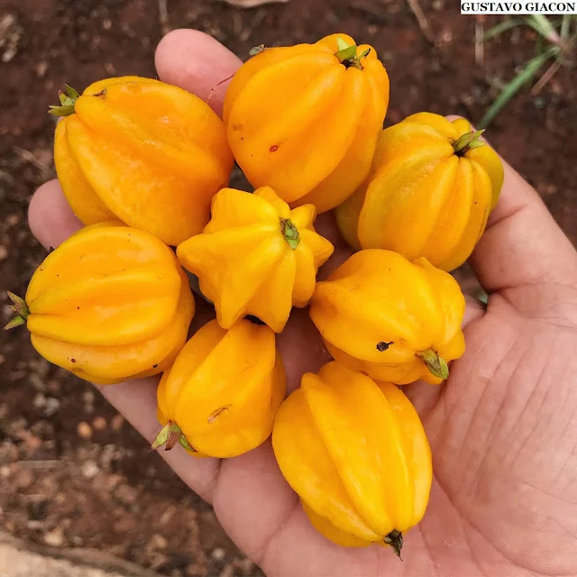

- pegue uma garrafa devidamente esterelizada:
coloque 1/2 litros de pitanga(inteira);
adcione raspas de limão;
adcione 4 colheres de sopa de melaço de cana de açucar;
enche o resto da garrafa com água (mas deixe um espaço de pelomenos 3 dedos de altura para a garrafa não explodir em sua mão);
deixe a mistura descançar por 20 dias;
e agora é só aproveitar.
geleia:
- em uma panela:
adcione uma bacia de pitanga a panela;
ligue o fogão em fogo médio;
espere 20 a 30 minutos, durante a espera desse 20 a 30 minutos, mexa bem as pitangas para cuzir por igual;
depois dos 20 a 30 minutoos, em outra bacia:
retire s çaroços e adcione o açucar:
volte a panela para o fogão em fogo meédio e adcione meio quilo de açucar;
misture bem por 20 minutos até chegar ao ponto;
e aproveite;
no liquitificador:
adcione uma xicara de pitanga levemente congelada;
adcione 1 litro de água;
adcione o quanto de açucar que você quiser;
ligue o liquitificador na função "pulsar" por 5 segundos não podendo moer as sementes;
passe a mistura por uma peneira;
coloque a mistura em uma jarra de suco;
e aproveite.pitanga vermelha(tradicional):
A pitanga tradicional (Eugenia uniflora) é o fruto da pitangueira, uma árvore nativa da Mata Atlântica amplamente cultivada em todo o Brasil. Ela é facilmente reconhecida por seu formato globoso e sulcado (com "gomos"), sua cor vermelha vibrante quando madura e seu sabor agridoce característico.
Aspecto Visual: O fruto passa por diversas cores durante o amadurecimento: do verde ao amarelo, laranja e, finalmente, ao vermelho intenso ou roxo-escuro.
A Pitangueira: Pode variar de um arbusto de 2 metros até uma árvore de 6 a 12 metros de altura. Adapta-se bem a diversos solos e climas, preferindo sol pleno.Uso Culinário: Devido à sua delicadeza, é difícil de ser comercializada in natura, sendo muito utilizada na produção artesanal de sucos, geleias, doces e licores.
Valor Cultural e Terapêutico: O nome vem do tupi pi'tãg, que significa "vermelho". Na medicina popular, as folhas são usadas em infusões (chás) para tratar febre, problemas estomacais e hipertensão.pitanga preta:
A pitanga preta é uma variação mais rara e exótica da Eugenia uniflora, a mesma espécie da pitanga tradicional. Considerada uma "joia" para colecionadores de frutíferas, ela se destaca principalmente pelo seu sabor superior e propriedades nutricionais intensificadas.
Sabor: É consideravelmente mais doce e menos ácida que a pitanga vermelha, com um gosto marcante que lembra a cereja.
Aparência: O fruto atinge uma coloração roxo-escura, quase negra, quando está totalmente maduro e pronto para o consumo.
Nutrientes: Devido à sua cor escura, é extremamente rica em antocianinas, potentes antioxidantes que combatem o envelhecimento precoce e fortalecem o sistema imunológico.pitanga laranja/amarela:
As pitangas de coloração amarela e laranja são variações naturais da mesma espécie da pitanga comum (Eugenia uniflora). Embora a vermelha seja a mais famosa, essas variedades são muito apreciadas por colecionadores de frutas devido à sua doçura e beleza ornamental.
Cor e Sabor:
Pitanga Amarela: Quando totalmente madura, apresenta uma cor amarela radiante. Seu sabor é frequentemente descrito como muito doce e agradável, com notas que podem lembrar a tangerina.
Pitanga Laranja: É um estágio comum no amadurecimento da pitanga tradicional, mas existem variedades que mantêm o tom alaranjado mesmo quando prontas para o consumo. O sabor costuma ser agridoce, equilibrando bem a acidez e a doçura.pitanga-anã do cerrado:
A pitanga anã do cerrado (Eugenia pitanga), também conhecida como pitanga-peva, é uma espécie fascinante e distinta da pitanga comum por seu porte rasteiro e extrema precocidade. Nativa dos campos e cerrados do Brasil, ela é uma das favoritas para quem tem pouco espaço.
Porte Compacto: Diferente da árvore tradicional, esta é um arbusto que geralmente mede entre 50 cm e 2 metros de altura.
Produção Precoce: É comum ver mudas de apenas 15 cm já florescendo e carregando frutos.
Sistema Radicular Profundo: Possui um xilopódio (raiz em forma de batata), o que a torna muito resistente a secas e até a queimadas típicas do seu bioma.
Sabor e Frutos: Os frutos são vermelhos, brilhantes e tendem a ser mais doces e menos adstringentes que os da pitanga comum, com uma polpa bem suculenta.pitanga-nude
A pitanga nude (também conhecida como pitanga amarela ou branca) é uma variedade rara de Eugenia uniflora que se destaca pela sua coloração clara, entre o amarelo e o branco rosado quando madura, diferenciando-se das pitangas vermelhas ou pretas comuns.
Aparência e Sabor: Possui frutos grandes, lisos, muito doces e com sabor agradável.
Rareza: É considerada uma planta rara na natureza.
Cultivo: É ideal que as mudas sejam enxertadas para garantir a cor amarela/nude, pois o plantio por sementes pode causar a degeneração da variedade, fazendo com que o fruto volte a ser vermelho.
Produção: Plantas enxertadas podem começar a produzir a partir de 1 ano de idade.
Uso: Pode ser consumida fresca ou utilizada em sucos, geleias e compotas, além de ser excelente para paisagismo.pitangatuba:
A pitangatuba (Eugenia selloi, anteriormente E. neonitida), também chamada de pitangão ou pitanga-gigante, é uma das espécies mais exóticas e cobiçadas do gênero das pitangas. Diferente da pitanga tradicional, ela produz frutos grandes, amarelos e com um formato que lembra muito uma carambola em miniatura.
Aparência: O fruto é graúdo, podendo atingir até 7 cm ou 10 cm de comprimento. Tem casca fina e delicada, com gomos bem marcados.
Sabor: Possui um paladar agridoce e refrescante, com uma acidez equilibrada que alguns comparam à mistura de pitanga com abacaxi ou carambola.
Perfume: É extremamente aromática, exalando um cheiro marcante típico das mirtáceas.
tipos de pitanga:



tabela de raridade das pitangas:

| tipos de pitanga | tradicional | preta | laranja/amarela | anã-do-cerrado | nude | pitangatuba |
|---|---|---|---|---|---|---|
| porcentagem no brasil | 0%, não rara | 1% ou 2%, rara | x%, indefinida | x%, indefinida (mas comum no cerrado) | 1%, muito rara | 0,01% muito rara |